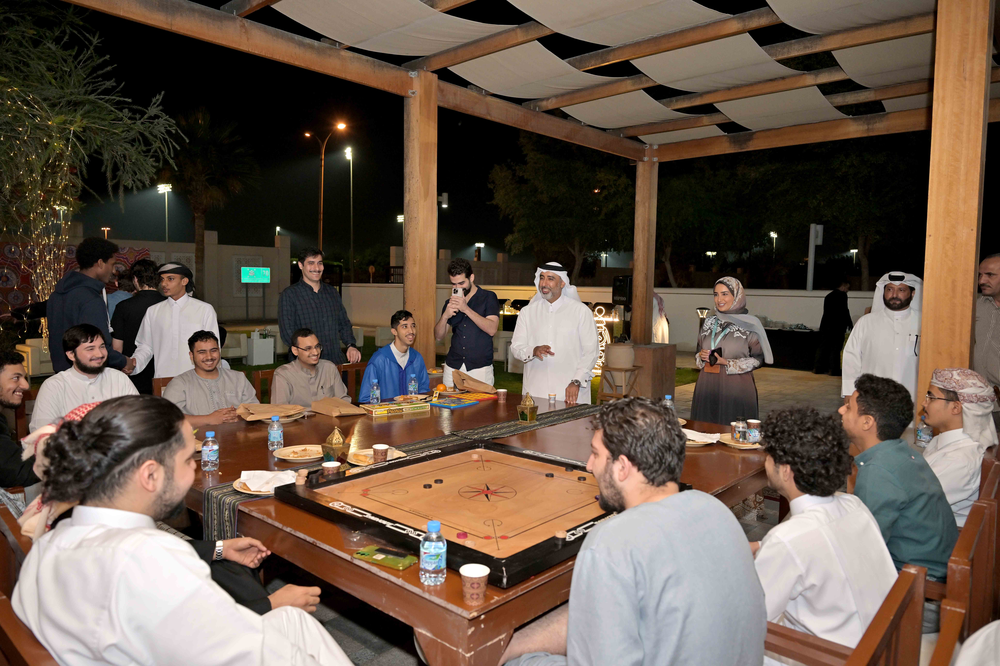
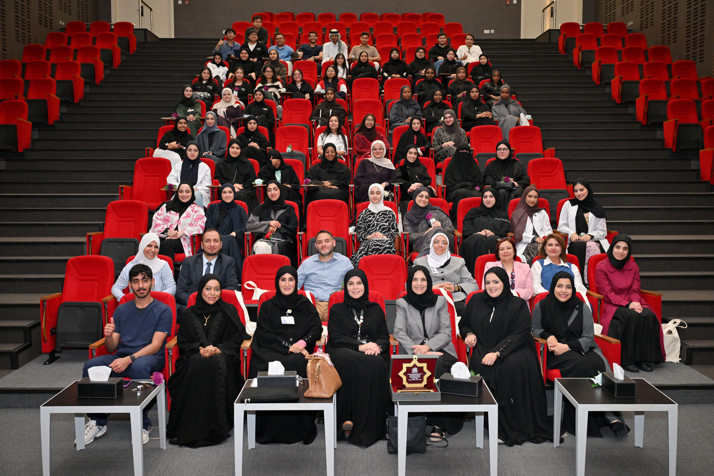
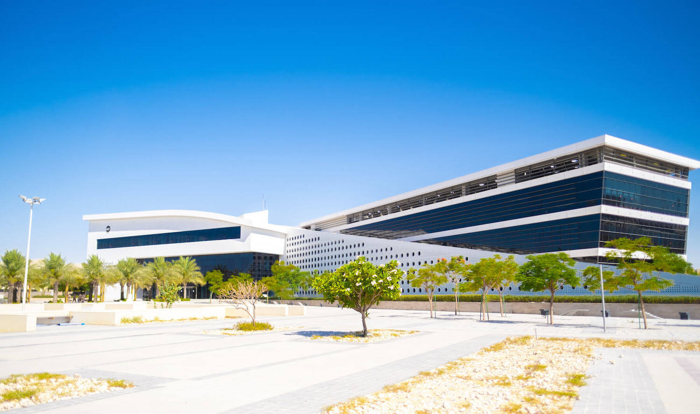
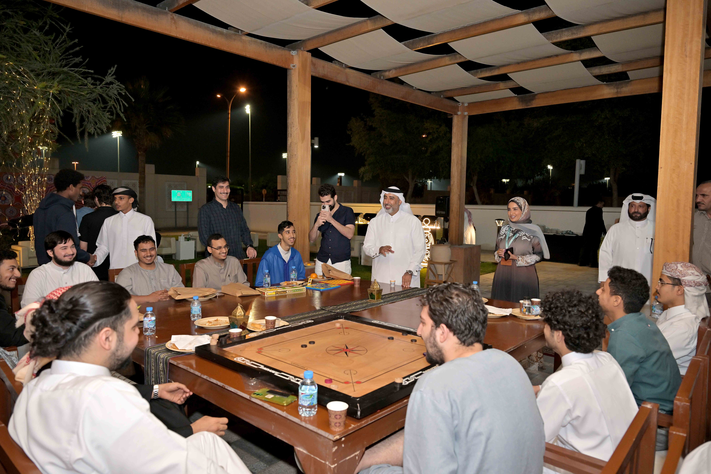
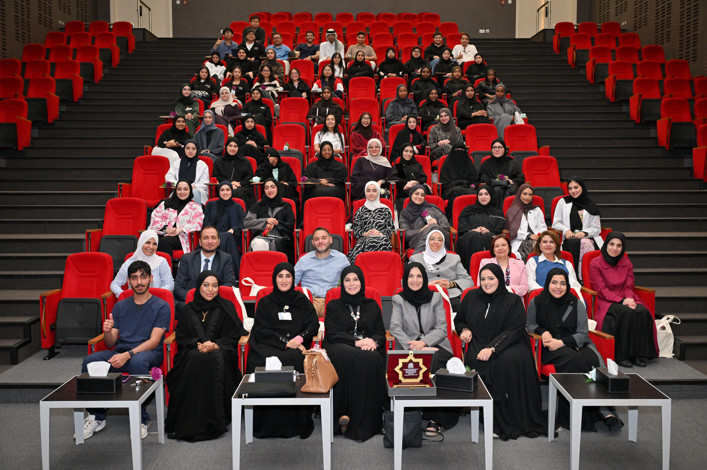
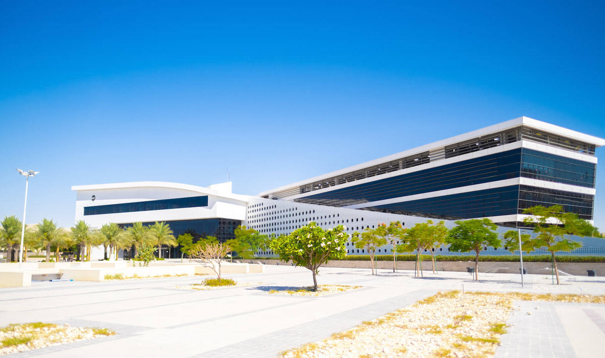

College of Arts and Sciences
The College of Arts and Sciences (CAS) is the largest college at QU, offering various degrees at the undergraduate and graduate levels. CAS is home to nine academic departments, 15 undergraduate programs, seven graduate programs, as well as five accredited degree programs.
College of Business and Economics
The College of Business and Economics (CBE) was founded in 1985 and offers undergraduate and graduate programs in various business disciplines. The college is accredited by the Association to Advance Collegiate Schools of Business (AACSB).
College of Education
The College of Education (CED) was the primary academic body under which Qatar University was founded in 1973. It offers programs in Educational Sciences, Psychological Sciences, and Art Education.
College of Engineering
The College of Engineering (CENG) offers undergraduate and graduate programs in various engineering disciplines. The college aims to provide its students with abilities to succeed as engineers that are sought after in the professional world and graduate schools.
College of Health Sciences
The College of Health Sciences (CHS) was founded in 2016 and offers undergraduate programs in biomedical sciences, human nutrition, and public health, as well as graduate programs in biomedical science and public health.
College of Law
The College of Law offers programs that prepare students for legal careers. The college focuses on providing a comprehensive legal education that combines theory and practice.
College of Medicine
The College of Medicine was established in 2014 and offers a Doctor of Medicine (MD) program. The college aims to produce competent physicians who can contribute to the healthcare sector in Qatar and beyond.
College of Pharmacy
The College of Pharmacy offers programs leading to Bachelor of Science in Pharmacy, Doctor of Pharmacy, and Master of Science in Pharmacy. It is the first pharmacy college to be established in Qatar and is accredited by the Canadian Council for Accreditation of Pharmacy Programs (CCAPP).
College of Sharia and Islamic Studies
The College of Sharia and Islamic Studies was among the first colleges founded at Qatar University in 1977. It offers programs in Islamic Jurisprudence, Islamic Culture & Preaching, and Foundations of Islam.
College of Dental Medicine
The College of Dental Medicine was founded in 2019 and offers a six-year program leading to a Doctor of Dental Medicine degree. The college aims to produce competent dental professionals to meet the oral health needs of the community.
College of Nursing
The College of Nursing offers programs designed to prepare students for careers in nursing, focusing on providing high-quality education and training to meet the healthcare needs of the population.
College of Sport Science
The College of Sport Science offers a Bachelor of Science degree with concentrations in Sport Management, Exercise and Fitness, and Physical Education. The program aims to prepare students for careers in the sports industry.
 




